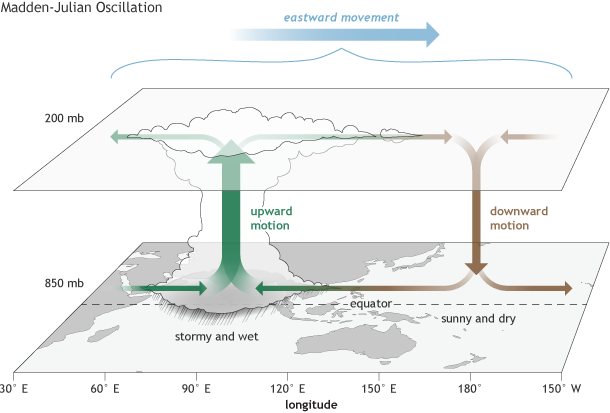
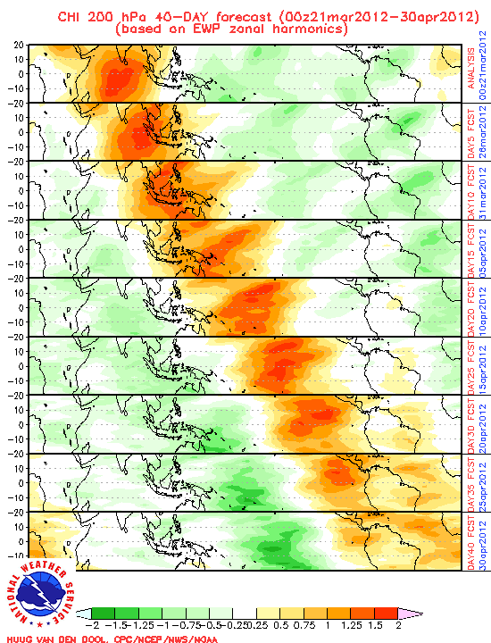
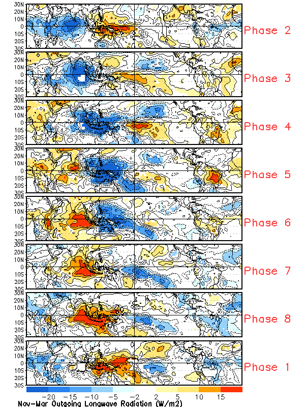

Assignments#
Cycle 1: Tropical Thermodynamics & Static Stability#
Instructions#
Teams: Work in pairs.
Topic selection: By Day 1 of Cycle 1, choose one of the topics below.
Starter code: Use the provided notebook template to download and plot IGRA2 data or NCEP–NCAR reanalysis.
Collaboration (optional): Track your work in Git (one repo per team).
Topic Options#
1. MJO Preconditioning of Low-Level Static Stability#
Scientific importance: The Madden–Julian Oscillation (MJO) is the dominant mode of tropical intra-seasonal variability, driving bursts of deep convection that modulate global weather (e.g., monsoons, midlatitude teleconnections). Low-level equivalent potential temperature (θₑ) in the boundary layer reflects the reservoir of moist static energy available to fuel convection. Quantifying how θₑ anomalies lead or lag convective bursts is key to improving MJO prediction.
State-of-the-art aspects: Recent studies employ high-resolution reanalyses and satellite composites to pinpoint the preconditioning signals preceding active MJO phases (e.g., timing and vertical structure of θₑ buildup) and link them to moisture–convection coupling. Advances in machine-learning MJO forecasts increasingly use θₑ composites as input features, but fundamental understanding of the physical lead-time remains an open research frontier.
Objective: Quantify boundary-layer \(\theta\) profiles, \(\frac{d\theta}{dz}\), and \(N^2\) anomalies leading active/inactive MJO phases.
Key tasks:
Download IGRA2 soundings (choose 2–3 sites in the suggested region) for several MJO events.
Compute \(\theta\) profiles, \(\frac{d\theta}{dz}\), and \(N^2\); derive daily anomalies.
Composite low-level \(\theta\) profiles, \(\frac{d\theta}{dz}\), and \(N^2\) anomalies against the RMM index.



Data & tools:
IGRA2 files: see RMM and IGRA notebooks.
RMM index (local): data/rmm.74toRealtime.txt
Python packages:
pandas,xarray,metpy,cdsapimatplotlib,cartopy(optional)
siphonfor IGRA2 requests
References:
Wheeler, M. C., & Hendon, H. H. (2004). An all-season real-time multivariate MJO index: Development of an index for monitoring and prediction. Monthly Weather Review, 132(8), 1917–1932.
Benedict, J. J., & Randall, D. A. (2007). Observed characteristics of the MJO relative to maximum rainfall. Journal of the Atmospheric Sciences, 64(12), 2332–2354.
2. Decadal Trends in Tropical Static Stability#
Scientific importance: Static stability (lapse rate between ~850 hPa and 500 hPa) controls the depth and vigor of tropical convection, influencing precipitation patterns, hurricane intensity, and large-scale circulation. Detecting trends in stability under global warming directly tests climate-model projections that predict a stability increase in the free troposphere, which could modulate tropical rainfall and extreme events.
State-of-the-art aspects: While reanalyses and radiosondes now span 60+ years, significant uncertainties remain in trend magnitude and statistical robustness (e.g., homogenization issues, QC of early soundings). Cutting-edge research uses advanced trend-detection methods (Mann–Kendall tests, Bayesian change-point analysis) and composite approaches to separate anthropogenic signals from natural variability (ENSO, volcanic aerosols).
Objective: Detect trends in lapse rate (850–500 hPa) and CAPE over the eastern tropical Pacific (1960–2020).
Key tasks:
Extract lapse rate from IGRA2 and ERA5.
Perform linear regression + Mann–Kendall tests.
Map spatial patterns and relate to ENSO indices.
Data & tools:
NCEP/NCAR daily data:
Variables: temperature (levels 1000–100 hPa), years 1981–2020.
Indices: SST trends, NINO3.4 (NOAA PSD) for ENSO.
References:
Sobel, A. H. (2002). The ENSO signal in tropical tropospheric temperature. Journal of Climate, 15(18), 2702–2715.
Grise, K. M. (2010). A global survey of static stability in the stratosphere and lower troposphere. Journal of Climate, 23(9), 2333–2349.
Deliverables#
Jupyter Notebook (
.ipynb):Data processing (download & parsing)
Computation of thermodynamic variables (θ, θₑ, lapse rate, CAPE, TIL metrics)
Plots: T–p profiles, θ vertical profiles, anomaly composites, trend maps, etc.
Inline markdown explaining each step
Presentation (5 min + 2 min Q&A in class Week 3):
Introduction
Data & Methods (brief)
Results & Interpretation
Conclusions & Future Work
References (consistent style)
Slide deck (max 5 slides) summarizing your question, methods, and key findings
Be Prepared To#
Defend your methodological choices (data selection, QC flags, analysis window).
Discuss limitations and possible extensions (e.g., alternative datasets, other basins).
Propose follow-up analyses based on your results.